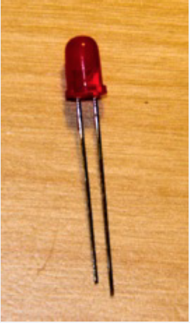
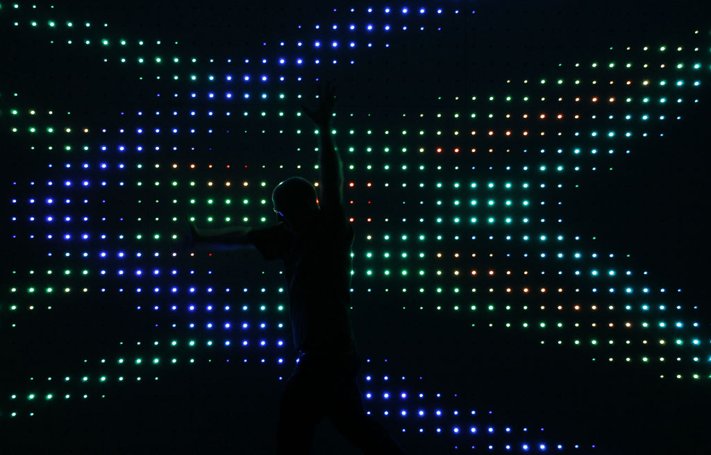

Gray Area: Pysical Computing 2
Gray Area: Pysical Computing 2
Gray Area: Pysical Computing 2
Gray Area: Pysical Computing 2
- Quick Review: Connect a joystick to P5JS with NodeJS
- Soldering Excercise
- Introduction to addressable LED's
- Programming exercise: Writing custom functions
- Introduction to the Johnny Five library
- Liquid Crystal Display
Topics for Today:

Connections
GND -> GND
5V -> 5V
Vrx -> A1
Vry -> A0
SW -> 2
Upload joystick with arduino
cd 'joystick_p5js' && npm install && node app.js && localhost:3000 in the browser
hackster.io
Adafruit
www.sparkfun.com
www.seeedstudio.com
Introduction to Addressable LEDS


Basic LEDS Need a lot of Wiring
Addressable LEDs provide circuitry to communicate serially

Each LED has a chip to receive, decode, drive LED’s and propagate data

They are chainable, fairly cheap and have their own resistors etc..
You can drive 10000's from 1 microcontroller
Adafruit has branded these Neopixels

You can get them for half the price on Ebay as ws2812's

These have a 5v, GND and DIN pin

Connect 5v to 5v, GND to GND and DIN to Pin6
Import the NeoPixel Library

Import the NeoPixel Library

Let's try some examples and write our own code!
upload sad_pixel
FastLED
Fast LED LibraryFastLED-Demos
APA102
APA102 aka “Superled”Web based control panel
Upload PhysicalNeoPixel for Arduino- CD serial_ws input
- Change port on line 12 of index.js
- npm install
- node index.js
- go to localhost:3000 in browser
IR Remote Control

Hook Up the IR reciever

- IRL remote
Install IRLRemote
Important install version 1.7.4
Receive_Custom_neo.ino
Websocket input example
cd serial_ws_input
change serailport on line 12 of index.js
npm install
node app.js
go to http://localhost:3000
Johnny-Five is the original JavaScript Robotics programming framework. Released by Bocoup in 2012, Johnny-Five is maintained by a community of passionate software developers and hardware engineers. Over 75 developers have made contributions towards building a robust, extensible and composable ecosystem.
Starting a new Node app
- Create a new folder named, 'J5_led_1'
- Open the terminal
- type 'cd' & space
- drag your folder to the terminal and hit return
- Now we are in our new folder in the terminal
- Type 'npm init' & hit return
- fill out the questions
- drag your folder onto Sublime Text
- type 'npm install johnny-five --save
- Have a look at the package.json file that was generated
- This stores metadata about our app
contents of package.json
{
"name": "J5_led_1",
"version": "1.0.0",
"description": "A Johnny Five LED app",
"main": "index.js",
"scripts": {
"test": "echo \"Error: no test specified\" && exit 1"
},
"author": "",
"license": "ISC",
"dependencies": {
"johnny-five": "^0.8.106"
}
}
create a new file, enter the following code and save as index.js in your new folder
var five = require("johnny-five");
var board = new five.Board();
board.on("ready", function() {
var led = new five.Led(6);
led.blink(500);
});
- Upload firmata to arduino
- run 'node index.js' at the terminal
try a pulse
var five = require("johnny-five");
var board = new five.Board();
board.on("ready", function() {
var led = new five.Led(6);
led.pulse(500);
});
Led Animations
var five = require("johnny-five");
var board = new five.Board();
board.on("ready", function() {
var led = new five.Led(6);
led.pulse({
easing: "linear",
duration: 3000,
cuePoints: [0, 0.2, 0.4, 0.6, 0.8, 1],
keyFrames: [0, 10, 0, 50, 0, 255],
onstop: function() {
console.log("Animation stopped");
}
});
});
Reference
LED API
Animation API
Full API
- LCD RS pin to digital pin 12
- LCD Enable pin to digital pin 11
- LCD D4 pin to digital pin 5
- LCD D5 pin to digital pin 4
- LCD D6 pin to digital pin 3
- LCD D7 pin to digital pin 2
Additionally, wire a 10k pot to +5V and GND, with it's wiper (output) to LCD screens VO pin (pin3). A 220 ohm resistor is used to power the backlight of the display, usually on pin 15 and 16 of the LCD connector